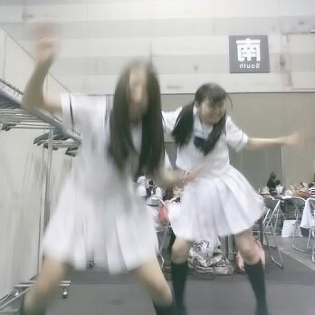
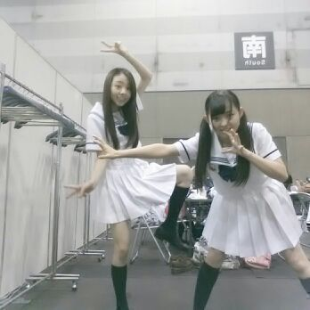

こんにち
こんばん
おはよ〜う\(*´ω｀*\)
ろってぃ-だお〜。
今日は明日のための
リハーサルやったきたぁ〜♪
終わってからの楽屋で・・・
あにあに・まにまに・せつこ。
Rotty夢☆Tシャツきてるよん\(・ω・)/
ぃゃん。わら
もう１枚あるから、
よし...誰かにプレゼントしちゃお-。
明日は、
楽天 VS 日ハムの試合イベントに
参加させて頂きます ！！
よろしくお願いします(・▽・)！
そして、
楽天ファンの皆さん★、
日本ハムファンの皆さん☆も
よろしくお願いします！
東京ドームに行ったことは
ありますが、もちろん観客席で
あのひろ----------------- ぃ
芝生の上に立つのは初めての経験だし
ガールズルールをパフォーマンス
させて頂けるとゆうことで
本当に楽しみだし嬉しい限りです(^o^)！
客席から見たら
私達が豆粒の様に小さくなることも
分かっているから
いつもより 全力にパワフルに
踊りたいと思います☆！
いつかは 東京ドームで
乃木坂46のライブがしたいです★
それまでには
選抜に戻りたいです!!!!^▽^
パシャーーー ！！！！！！

こんなことするから
地元の友達に
ハゲって言われたし(¨)(‥)(..)(__)
あっ、
めっちゃ仲良ちな友達にだよ( ´∀｀)
トリャーーーー ☆☆☆☆☆

まあ も一人のこの子は
まりかって女だよ(*´∇｀*)わら
中学の卒業式の日
友達もよう分からん
なってきたんかしらんけど
ぉおー ！
はげしら〜＼(^o^)／
言われたからね 笑
・・・・
久しぶりに
友達に会いたくなってきたや〜ん
ヾ(о´∀`о)ノ
ぅんぢゃあ 明日も
悔いのない１日になるように
頑張ろうねっ♪
大好きやよ？
おやすみなさい (〃ω〃)